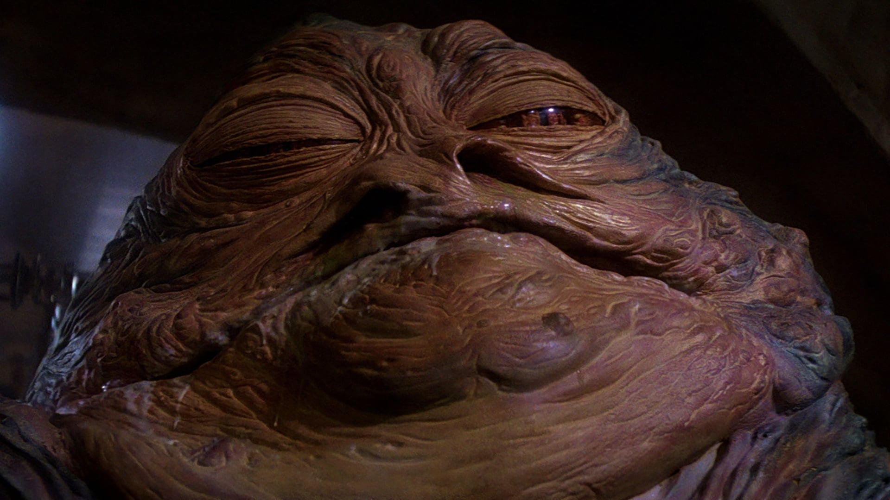
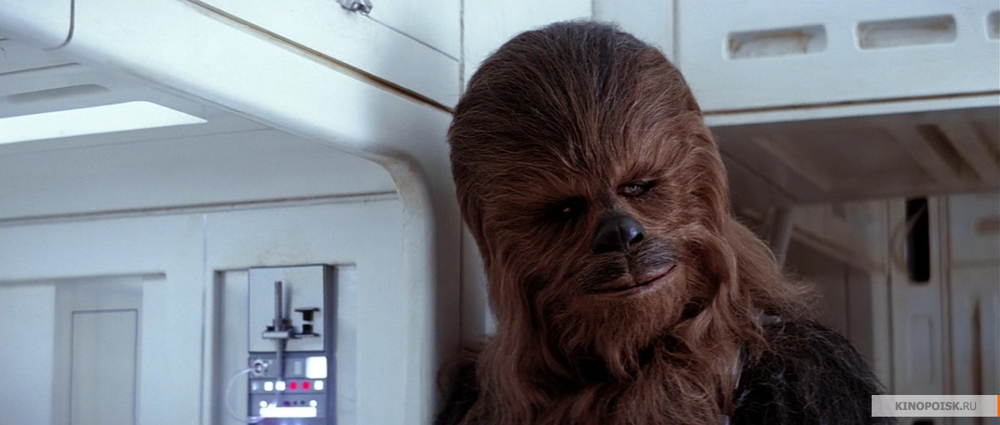
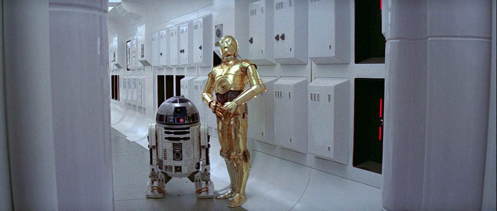
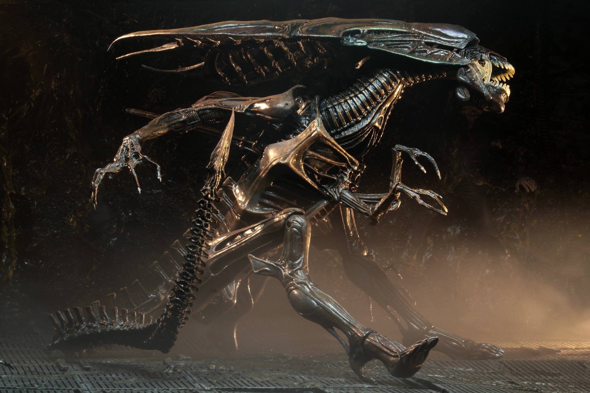

Топ 5 фильмов про космос
Интерстеллар

Когда засуха, пыльные бури и вымирание растений приводят человечество к продовольственному кризису, коллектив исследователей и учёных отправляется сквозь червоточину (которая предположительно соединяет области пространства-времени через большое расстояние) в путешествие, чтобы превзойти прежние ограничения для космических путешествий человека и найти планету с подходящими для человечества условиями.
Звёздные войны: Эпизод 6 – Возвращение Джедая
В шестом эпизоде «Звездных войн» Дарт Вейдер создает вторую «Звезду Смерти». Он объединяет все силы зла, чтобы с помощью этого смертоносного оружия нанести последний сокрушительный удар по повстанцам и их союзникам. Люк Скайуокер вместе с принцессой Лейей и верными дроидами R2D2 и C-3PO отправляется спасать своего друга Хана Соло, который попал в плен к отвратительному Джаббе Хатту — могущественному повелителю преступников. Повстанцы высаживаются на планету Эндор, чтобы оттуда вместе с Люком и его отрядом предпринять последнюю атаку на Имперский флот, атаку, от которой зависит судьба Галактики. В этом эпизоде Люк Скайуокер и Дарт Вейдер встречаются в последний раз… ибо из поединка между отцом и сыном живым выйдет только один…
Звёздные войны: Эпизод 5 – Империя наносит ответный удар
Борьба за Галактику обостряется в пятом эпизоде космической саги. Войска Императора начинают массированную атаку на повстанцев и их союзников. Хан Соло и принцесса Лейя укрываются в Заоблачном Городе, в котором их и захватывает Дарт Вейдер, в то время как Люк Скайуокер находится на таинственной планете джунглей Дагоба. Там Мастер — джедай Йода обучает молодого рыцаря навыкам обретения Силы. Люк даже не предполагает, как скоро ему придется воспользоваться знаниями старого Мастера: впереди битва с превосходящими силами Императора и смертельный поединок с Дартом Вейдером.
Звёздные войны: Эпизод 4 – Новая надежда
Татуин. Планета-пустыня. Уже постаревший рыцарь Джедай Оби Ван Кеноби спасает молодого Люка Скайуокера, когда тот пытается отыскать пропавшего дроида. С этого момента Люк осознает свое истинное назначение: он один из рыцарей Джедай. В то время как гражданская война охватила галактику, а войска повстанцев ведут бои против сил злого Императора, к Люку и Оби Вану присоединяется отчаянный пилот-наемник Хан Соло, и в сопровождении двух дроидов, R2D2 и C-3PO, этот необычный отряд отправляется на поиски предводителя повстанцев — принцессы Леи. Героям предстоит отчаянная схватка с устрашающим Дартом Вейдером — правой рукой Императора и его секретным оружием — «Звездой Смерти».
Чужой
В далеком будущем возвращающийся на Землю грузовой космический корабль перехватывает исходящий с неизвестной планеты неопознанный сигнал. Экипаж, в соответствии с основными инструкциями, обязан найти и исследовать источник сигнала. Оказавшись на планете, астронавты повсюду обнаруживают неопознанные предметы, по виду напоминающие гигантские коконы.